四列十二语：Deutsch / Español / Français / Italiano · 日本語 / 한국어 / Polski / Português (BR) · Русский / 简体中文 / 繁體中文 / 繁體中文（香港）
01
主菜单
最短的按钮词与最长的按钮词都在这一屏，先看木牌是否撑得住。
Deutsch Freies Spiel / Szenarien / DanksagungenEspañol Nueva partida / Campañas / Salir del juegoFrançais Jeu libre / Scénarios / Quitter le jeuItaliano Modalità libera / Scenari / Esci dal gioco
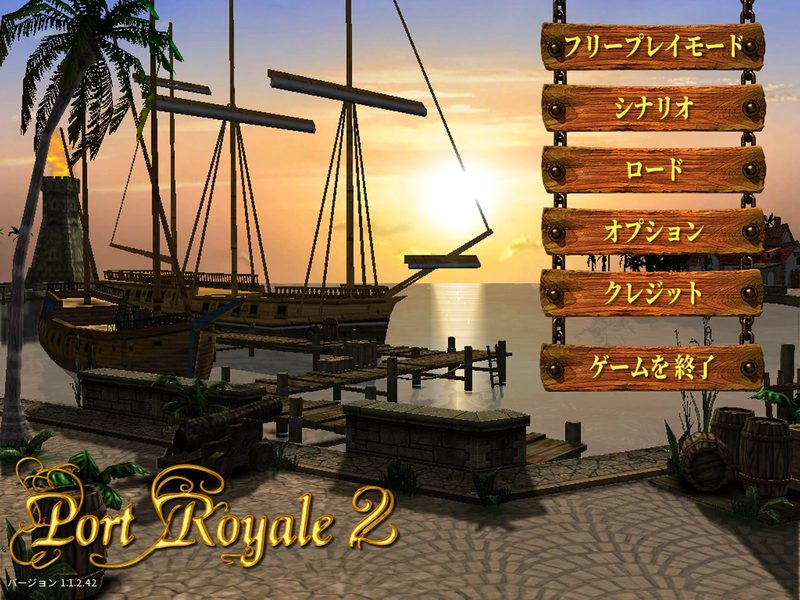
日本語 フリープレイモード / シナリオ / ゲームを終了한국어 자유 모드 / 시나리오 / 게임 종료Polski Tryb wolnej gry / Scenariusze / Wczytaj / Wyjście z gryPortuguês (BR) Modo livre / Cenários / Carregar / Opções / Créditos / Sair do jogoРусский Режим свободной игры / Сценарии / Загрузить / Настройки / Создатели / Выйти из игры简体中文 自由模式 / 剧本 / 载入 / 选项 / 制作人员 / 退出游戏繁體中文 自由模式 / 劇本 / 載入 / 選項 / 製作人員 / 退出遊戲繁體中文（香港） 自由模式 / 劇本 / 載入 / 選項 / 製作人員 / 退出遊戲
02
剧本模式建号
两个姓名输入框、左右箭头、特长说明框与起始资产说明框同屏。
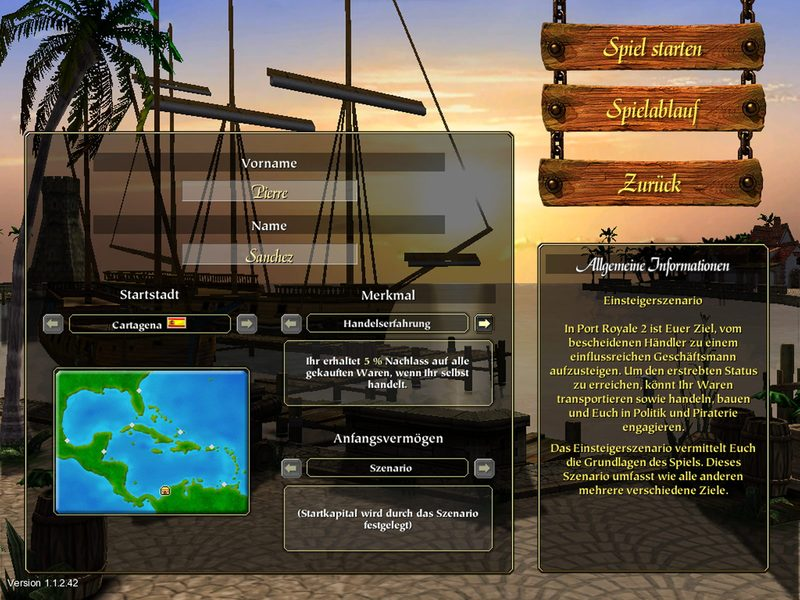
Deutsch Vorname / Name / Startstadt / MerkmalEspañol Nombre / Apellido / Ciudad y Nación / Bonificación
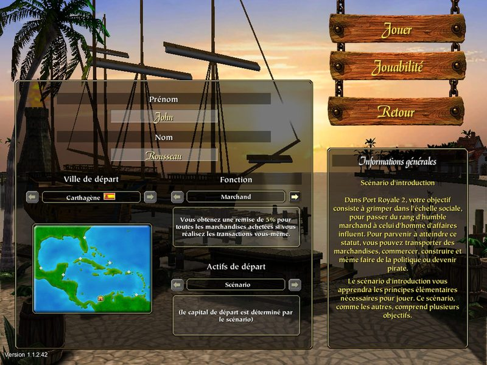
Français Prénom / Nom / Ville de départ / Fonction
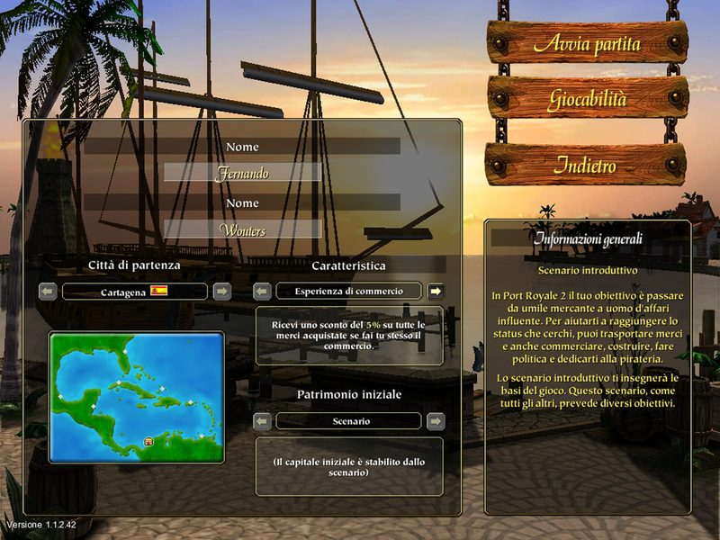
Italiano Nome / Città di partenza / Caratteristica / Patrimonio iniziale日本語 名 / 姓 / 開始時の町 / 特典한국어 이름 / 성 / 시작 도시 / 기능
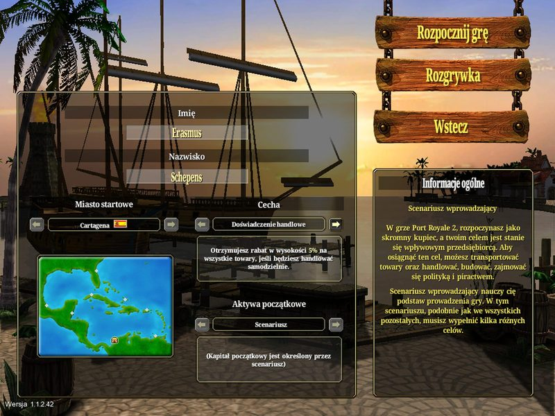
Polski Imię / Nazwisko / Miasto startowe / CechaPortuguês (BR) Nome / Sobrenome / Cidade inicial / Recurso / Experiência comercialРусский Имя / Фамилия / Стартовый город / Особенность / Опыт торговли
Deutsch Willkommen bei Port Royale 2 / SzenariozielEspañol Bienvenido a Port Royale 2 / Objetivo de la Campaña
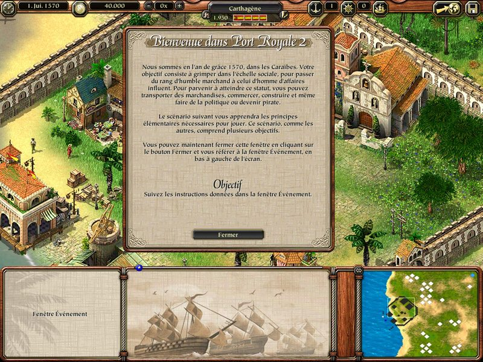
Français Bienvenue dans Port Royale 2 / ObjectifItaliano Benvenuto in Port Royale 2 / Obiettivo dello scenario
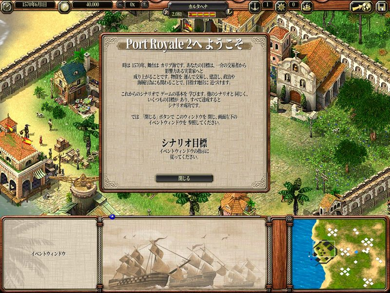
日本語 Port Royale 2へようこそ / シナリオ目標
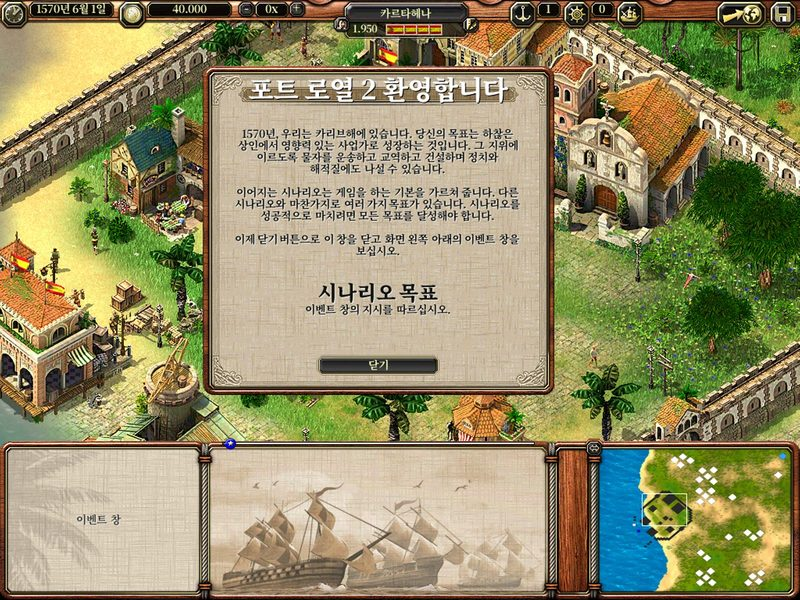
한국어 포트 로열 2 환영합니다 / 시나리오 목표
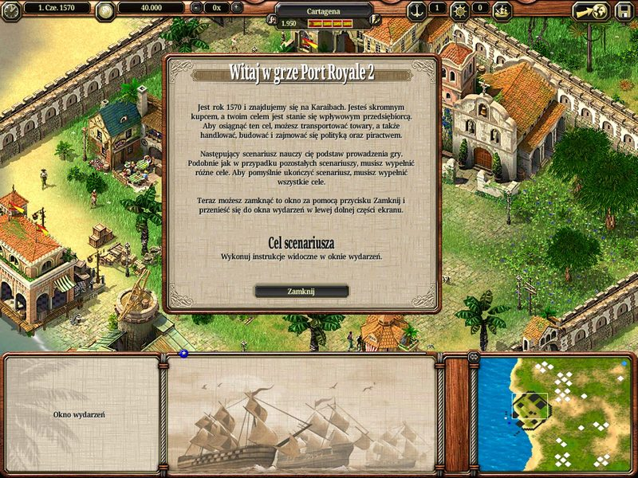
Polski Witaj w grze Port Royale 2 / Cel scenariuszaPortuguês (BR) Bem-vindo ao Port Royale 2 / Objetivo do cenário / FecharРусский Добро пожаловать в Порт-Рояль 2 / Цель сценария / Закрыть简体中文 欢迎来到 Port Royale 2 / 剧本目标 / 关闭繁體中文 歡迎來到 Port Royale 2 / 劇本目標 / 關閉
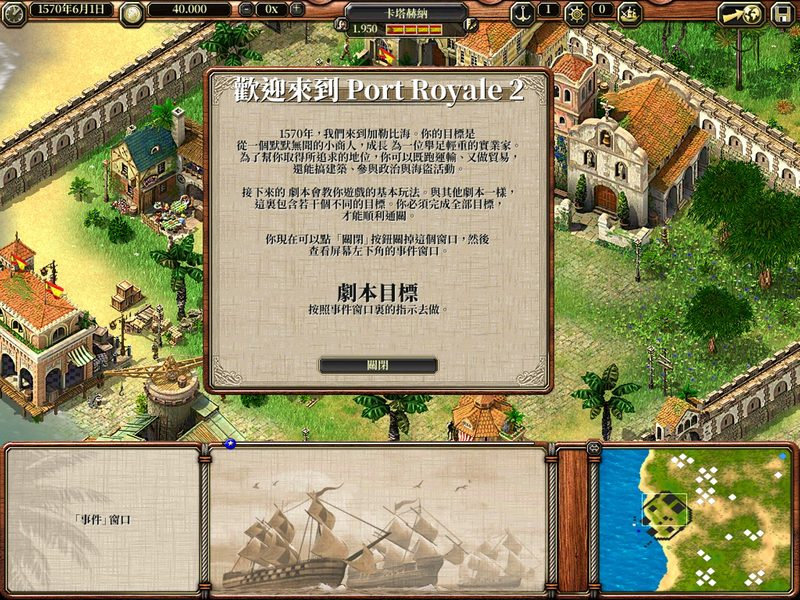
繁體中文（香港） 歡迎來到 Port Royale 2 / 劇本目標 / 關閉
04
城镇信息
人口、建筑、关系、生产图标挤在一块，专门看字段名和数值是否互相压住。
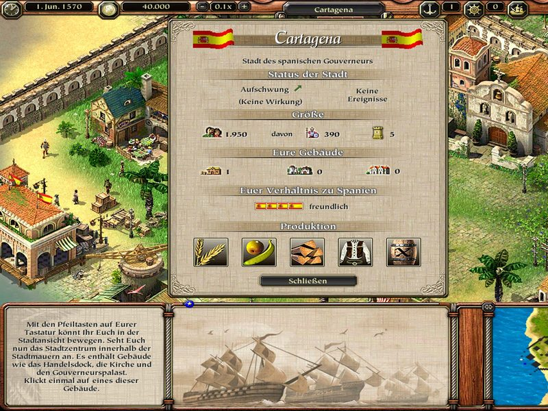
Deutsch Cartagena / Größe / Eure Gebäude / Produktion
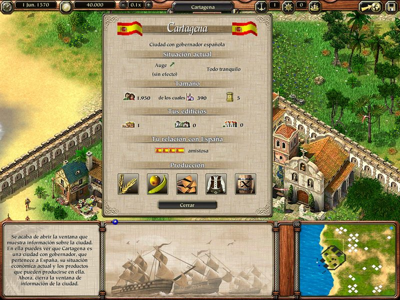
Español Cartagena / Tamaño / Tus edificios / Producción
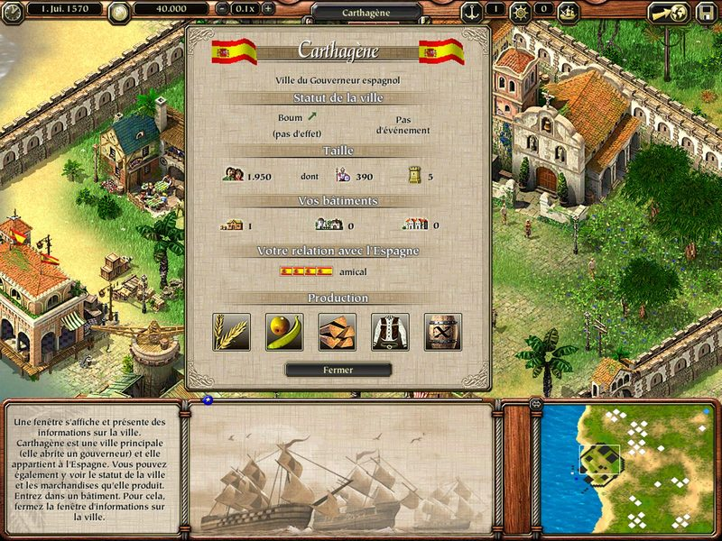
Français Carthagène / Taille / Vos bâtiments / Production
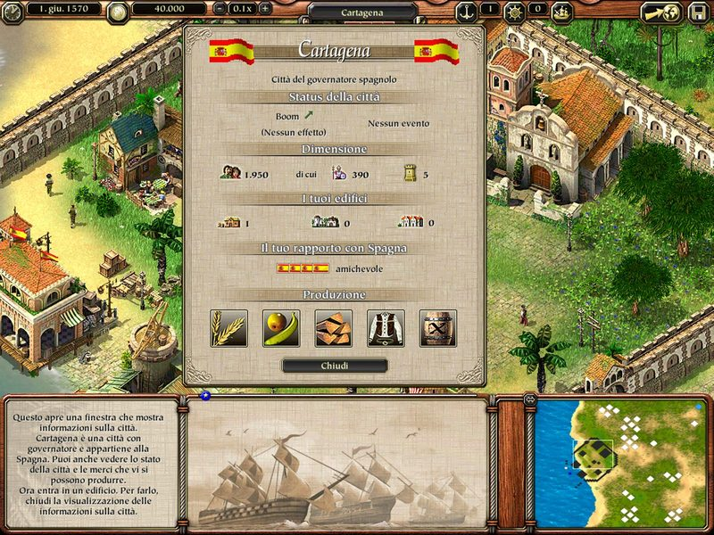
Italiano Cartagena / Dimensione / I tuoi edifici / Produzione日本語 カルタヘナ / 規模 / 自分の建物 / 生産
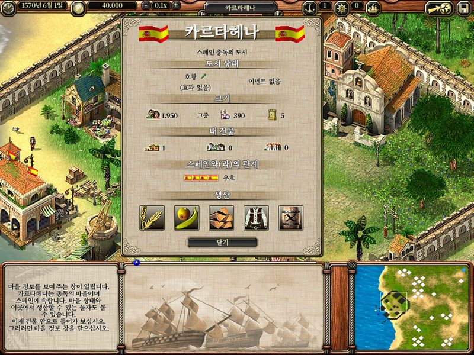
한국어 카르타헤나 / 크기 / 내 건물 / 생산
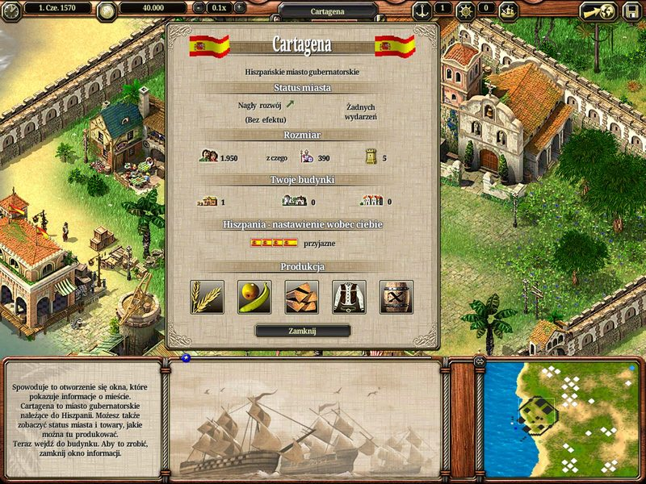
Polski Cartagena / Status miasta / Rozmiar / Produkcja
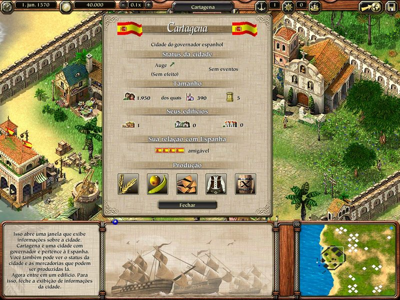
Português (BR) Cidade do governador espanhol / Status da cidade / Tamanho / Sua relação com Espanha / ProduçãoРусский Испанский административный центр / Статус города / Размер / Отношения со страной Испания / Производство简体中文 西班牙总督城 / 城镇的状态 / 规模 / 你与西班牙的关系 / 生产 / 关闭